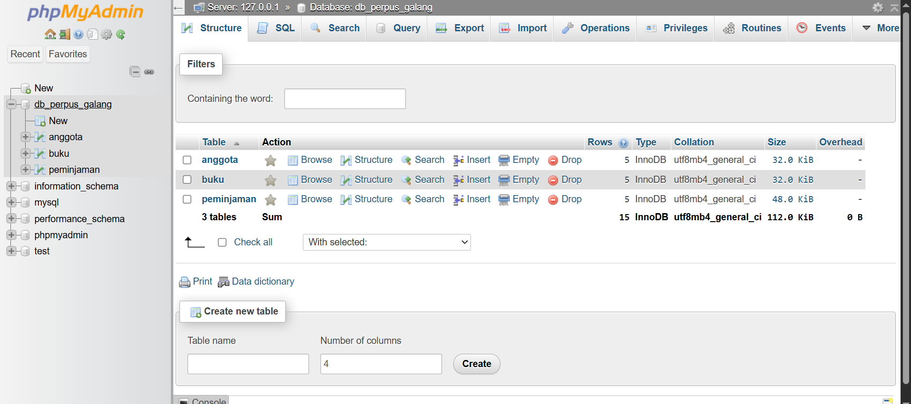
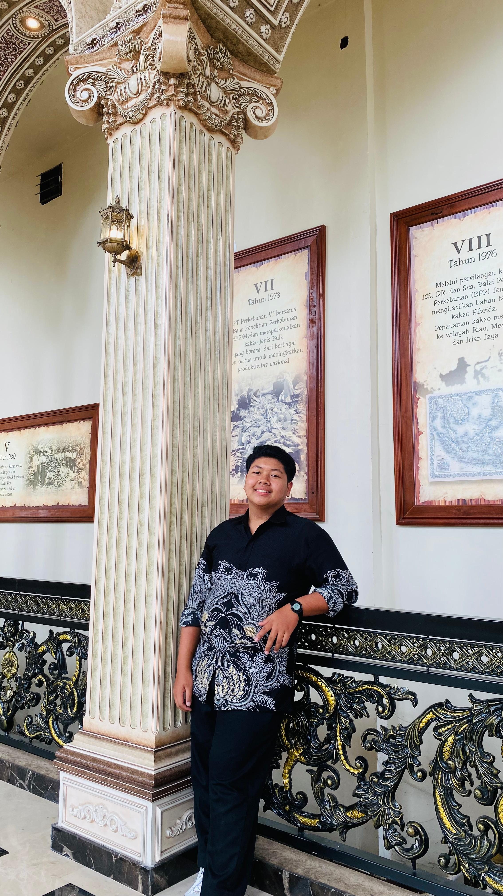
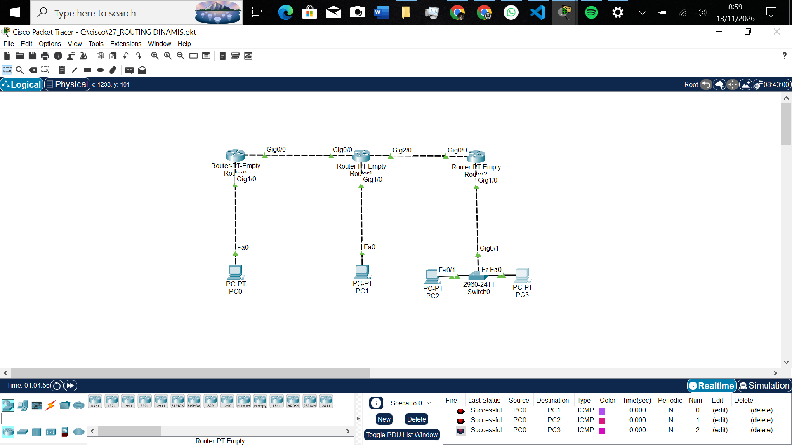
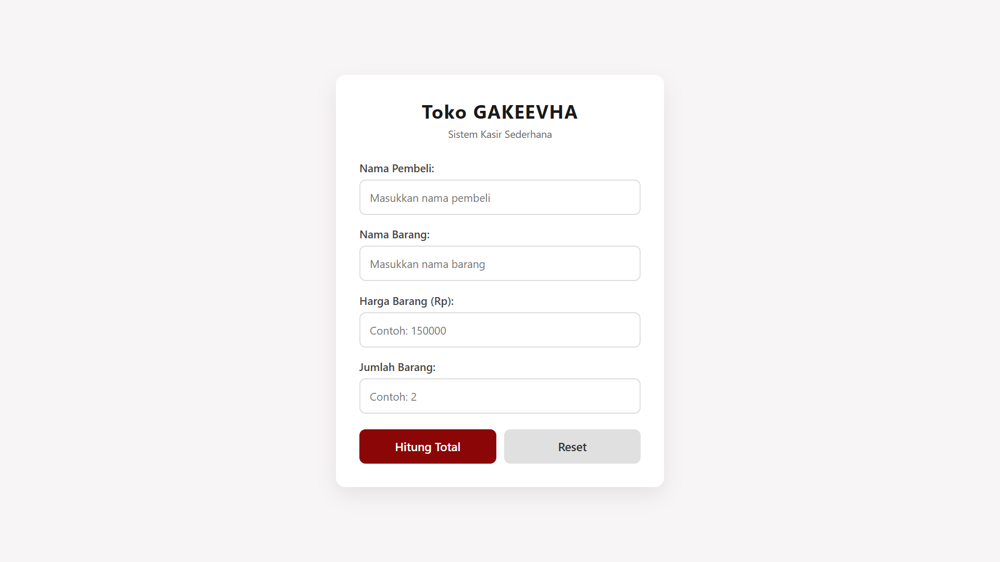
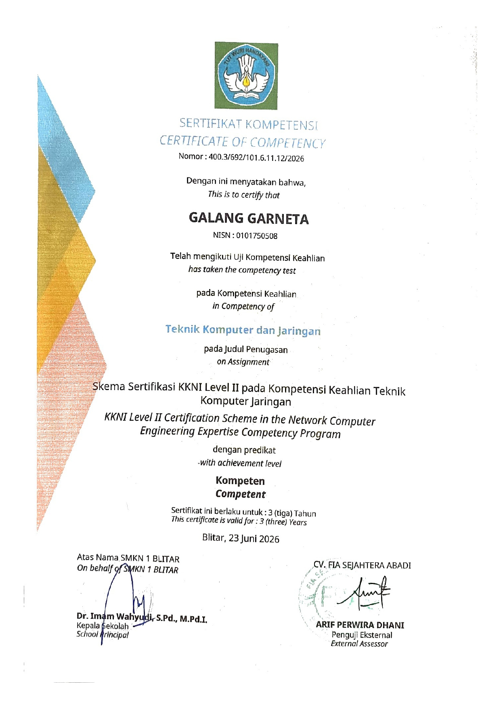
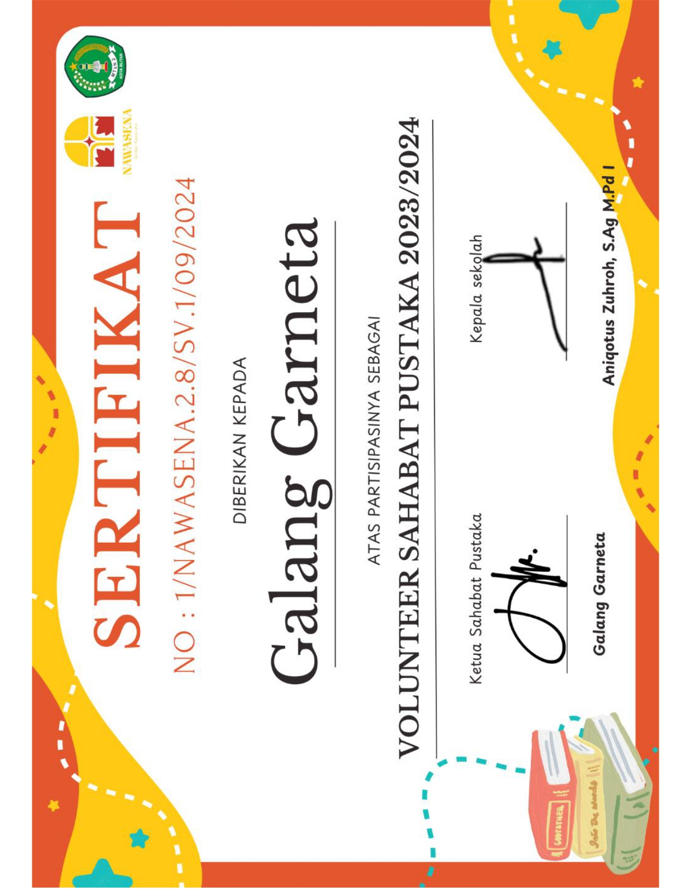

🔍 Full
Database
Database Design
Merancang dan mengelola sistem basis data yang efisien, aman, dan terstruktur untuk mendukung kinerja aplikasi yang optimal.
Talenta muda yang antusias berinovasi di bidang pengembangan web dan jaringan. Mari berkolaborasi menciptakan karya digital yang membawa dampak positif bagi masa depan!

Klik foto untuk memperbesarHalo! Saya Galang, Siswa kelas 11 SMKN 1 Blitar jurusan Teknik Jaringan Komputer dan Telekomunikasi [TJKT], talenta muda di bidang teknologi informasi yang berfokus pada pengembangan website interaktif serta infrastruktur jaringan komputer (Cisco & MikroTik). Mulai dari merancang topologi VLAN hingga perakitan dan perawatan hardware/software, saya senang memecahkan tantangan teknis demi menciptakan solusi digital yang andal. Sebagai bagian dari generasi muda, saya terus belajar dan berinovasi untuk berkontribusi membangun masa depan teknologi yang lebih cerah.
Arahkan kursor pada foto untuk memperbesar, atau klik foto untuk melihat ukuran penuh.

🔍 FullMerancang dan mengelola sistem basis data yang efisien, aman, dan terstruktur untuk mendukung kinerja aplikasi yang optimal.

🔍 FullPerancangan infrastruktur jaringan menggunakan switch & router Cisco, pemisahan segmen VLAN, trunking, dan inter-VLAN routing.

🔍 FullMembangun website responsif dan aplikasi kasir berbasis web untuk pencatatan transaksi serta pengelolaan data barang.
Lihat Proyek Kasir di GitHub ↗Klik pada gambar sertifikat untuk melihat dokumen secara penuh dan jelas.

🔍 FullSertifikasi resmi yang membuktikan kelulusan uji kompetensi keahlian dalam merancang, mengonfigurasi, dan mengelola infrastruktur jaringan komputer.

🔍 FullPenghargaan atas dedikasi, tanggung jawab, dan kepemimpinan selama menjabat sebagai Ketua Sahabat Pustaka di Perpustakaan MTSN 2 Kota Blitar dalam mengoordinasikan program kerja dan tim.
Klik tombol email di bawah untuk menyalin alamat email secara otomatis.